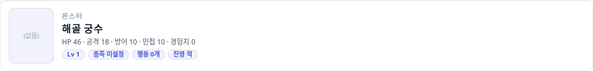
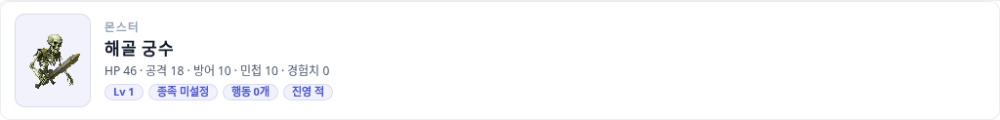
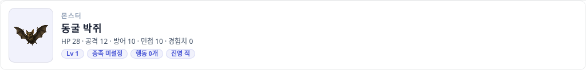
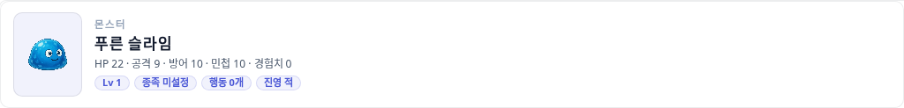
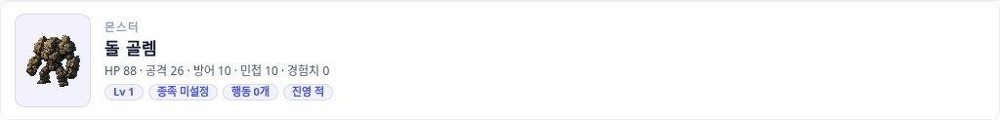
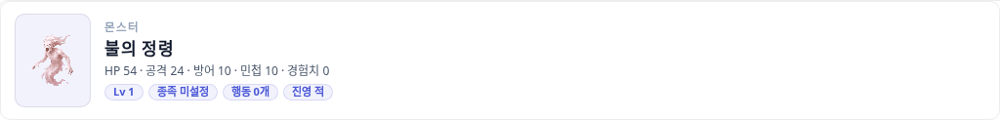
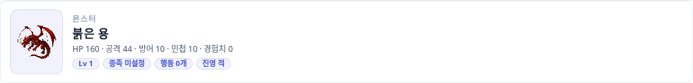
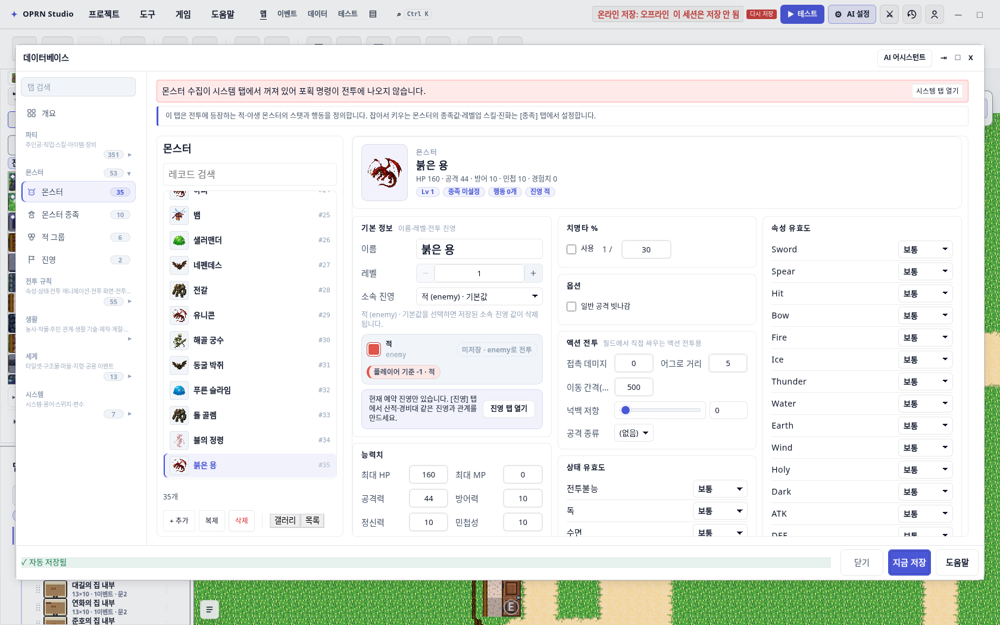
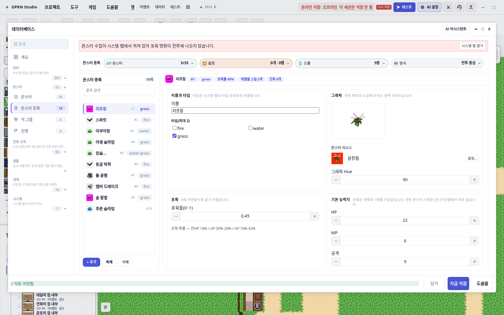
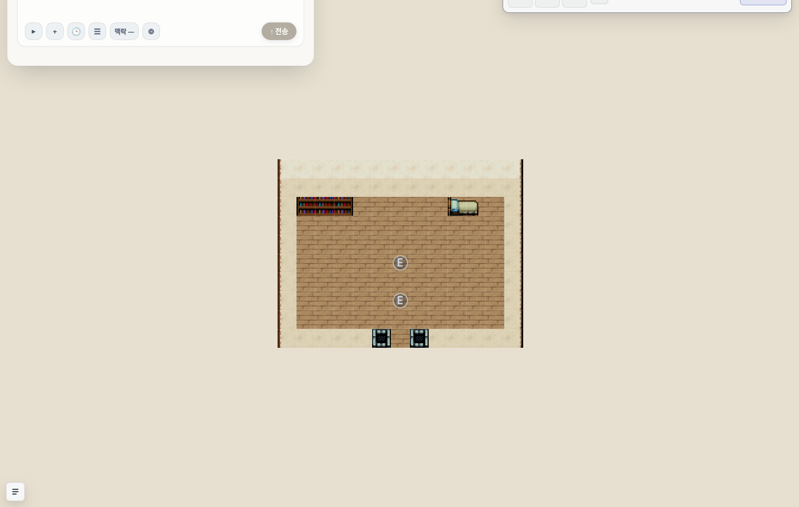

AI 가 NPC·몬스터를 만들 때 이미지를 빼먹던 결함
“AI 가 캐릭터나 몬스터를 만들 때 이미지(외형·칩셋)를 자꾸 빼먹는다”는 신고를 추적한 기록. 원인은 모델의 부주의가 아니라 저작 툴이 빈 외형을 통과시키고, 한국어 이름으로는 리소스를 찾을 수 없던 것이었다. 8개 저작 경로를 닫고 한국어 리소스 색인을 넣었다.
한 장으로 보는 결과
같은 몬스터 카드다. 왼쪽은 옛 툴이 저장하던 상태(monsterResourceId 없음),
오른쪽은 upsert_enemy 를 외형 필드 없이 다시 호출한 결과.
이름 “해골 궁수” 만 보고 해골 궁수 스프라이트를 찾아 붙였다.


generated-enemy-skeleton-archer 자동 배정. 무엇을 왜 붙였는지 경고로 함께 알린다.왜 모델이 필드를 빼먹었나
“모델이 게을러서”가 아니었다. 두 가지가 겹쳤다.
1. 빈 외형이 그냥 통과했다
upsert_enemy·define_monster_species·upsert_event 는 외형 필드가 없어도 커밋됐다.
결과는 저장 시점에 보이지 않고 전투에 들어가거나 맵을 돌아다닐 때 드러난다 —
battleFieldDom.ts:547 이 적 레코드의 이미지가 없으면 스킨 공용 스프라이트로 폴백하기 때문이다.
2. 한국어 이름으로는 리소스를 찾을 수 없었다
몬스터 리소스 id 는 전부 영어 어간(generated-enemy-skeleton-archer)인데 저작 이름은 한국어(“해골 궁수”)다.
searchResources("monster", "슬라임") 은 0건이었고, 한국어를 monsterResourceId 에 그대로 넣으면
invalid-args 로 튕겼다. 즉 모델에게는 “필드를 빼는 것”이 유일하게 통과하는 선택이었다.
한국어 이름 6종 실측
upsert_enemy 를 한국어 이름 + 외형 필드 없이 6번 호출한 결과. 전부 서로 다른, 이름에 맞는 스프라이트를 받았다.

skeleton-archer
bat-cave
slime-blue
golem-stone
spirit-01
dragon-red

define_monster_species 도 같은 경로를 탄다 — “푸른 슬라임” 종족이 generated-enemy-slime-blue 를 받았다.모델이 실제로 받는 경고
보정을 조용히 하지 않는다. 무엇을 왜 붙였는지, 바꾸려면 무엇을 하면 되는지 함께 돌려준다.
enemy.monsterResourceId 누락 → 이름 "해골 궁수" 으로
"generated-enemy-skeleton-archer" 를 붙였습니다.
다른 외형을 원하면 list_resources(kind:"monster")로 고른 뒤 다시 지정하세요.닫은 경로 8개
1차 심사에서 세 곳을 닫았는데, 리뷰어가 같은 결함을 그대로 내는 경로 4곳을 더 찾아냈다. “적을 하나 만들었더니 보이는데, 액션 전투 적을 만들면 안 보인다” 같은 구멍이 남으면 신고는 반복된다.
| 경로 | 증상 | 조치 |
|---|---|---|
upsert_enemy | 전투에서 공용 스프라이트로 대체 | 이름으로 해석 후 자동 배정 |
define_monster_species | 같음 | 같음 |
upsert_event | 말을 걸어야 하는 NPC가 투명 | 대화 있는 action 페이지에 주민 charset |
make_action_enemy | 보이지 않는 필드 몬스터 — defaultFieldSpawnGraphic 이 이 필드로 오버월드 스프라이트를 유도 | 생성 분기에 자동 배정 |
place_battle_blocker | 길을 막는 몬스터가 투명 — resolveGraphic(undefined) 이 {transparent:true} | {query:"monster"} 기본값 |
make_chase_scene | 추격자가 투명 | 같음 |
| 다중 페이지 NPC | 셀프스위치가 넘어가면 NPC 외형이 바뀜(1p people2 → 2p people1) | sprite 있는 형제 페이지를 복제 재사용 |
add_companion | 합류 NPC가 투명 → 이후 사람 동료에게 몬스터 스프라이트 | 액터 charset → 없으면 주민 charset |
일부러 건드리지 않은 것
graphic:{transparent:true}— 투명 이벤트의 명시적 경로. 표시가 있으면 보정하지 않는다.auto/parallel컷신 이벤트 — 말을 걸 대상이 아니므로 보일 필요가 없다.priority:"below"— 바닥 마커(벽 조사 등) 관례. 여기에 주민을 세우면 오탐이다.place_trap— 스키마가 “생략 시 투명”을 명시한다.- 몬스터 동료(
monsterFieldGraphic) — 몬스터 charset 유지가 맞다.
심사 3회
독립 심사자가 매번 코드를 읽고 직접 실행해 확인했다. 두 번 막혔고, 두 번 모두 실제 재현된 결함이었다.
1차 REQUEST_CHANGES 위 표의 아래 4경로 + 다중 페이지 문제를 지적. “make_action_enemy 는 초크포인트를 완전히 우회한다”를 소스로 입증.
2차 REQUEST_CHANGES 4경로는 닫혔음을 확인(형제 페이지 structuredClone 이 진짜 복제인지, below 게이트가 새 구멍인지까지 검증). 대신 새 결함 1건을 재현 — add_companion 폴백이 tex_easyrpg_charset_monster1, 즉 사람 동료에게 몬스터 그림. 테스트가 그 잘못된 id 를 기대값으로 고정하고 있어 스스로는 잡을 수 없는 상태였다.
3차 APPROVE 실제 툴 경로로 재확인: tex_easyrpg_charset_people1. 몬스터 동료는 monster1 유지, action:"remove" 는 투명 유지, 액터 자기 charset·슬롯 보존.
검증
| 게이트 | 결과 |
|---|---|
test/aiGraphicAutofill.test.ts (신규) | 15 passed 8경로 + 명시 opt-out + 오탐 방지를 고정 |
| 인접 계약 11파일 | 77 passed DB·NPC 배치·이벤트 필수필드·런타임 그래픽·전투 정합성·동료 규칙 |
tsc --noEmit | 변경 파일 0 진단 레포 전체 645건은 선재 빨간 기준선 |
openwiki:verify | ok 위키 실측 항목이 코드와 일치 |
| 편집기 실화면 촬영 | 12/12 green scripts/capture-ai-graphic-required.mts |
NPC·동료는 데이터로 확인
편집기 맵 뷰는 이벤트를 E 배지로 그리므로 스프라이트가 화면에 보이지 않는다. 그래서 NPC 쪽은 저장된 값으로 확인했다 — 심사자도 같은 값을 독립적으로 재확인했다.
| 대상 | 저장된 스프라이트 | transparent |
|---|---|---|
대화형 action NPC (upsert_event) | tex_easyrpg_charset_people1 | 없음 |
| 실내 맵 NPC (재확인) | tex_easyrpg_charset_people1 | 없음 |
사람 동료 합류 이벤트 (add_companion) | tex_easyrpg_charset_people1 | 없음 |
| 몬스터 동료 (대조군) | tex_easyrpg_charset_monster1 | 없음 |
action:"remove" 이벤트 (대조군) | — | true (의도) |

ev_ai_talker_indoor 가 그중 하나이며,
스프라이트 자체는 이 표면에 렌더되지 않으므로 시각 증거로 쓸 수 없다.
남은 것
범위 밖 선재 결함 1건을 심사 중에 발견했고, 별도 티켓 대상이다:
characterResourceId 가 없는 액터의 addFollower 는 actorId 만 실어서
followerFromInput 이 null 을 돌려준다 — 합류 이벤트는 이제 보이고 사람 모습이지만, 런타임에서 동료가 실제로 붙지 않는다.
이 PR 계열은 “보이는가”까지를 다뤘고, “붙는가”는 다른 결함이다.
또한 “불의 정령”은 spirit-fire 가 아니라 spirit-01 로 해석된다. 정령 계열이라 틀리지 않지만
가장 정확한 후보는 아니다 — 색인 점수 조정 여지로 남겨 둔다.
재현: DEV_SERVER_PORT=<free> npx vite 후
SHOOT_BASE=http://127.0.0.1:<port>/ npx tsx scripts/capture-ai-graphic-required.mts.
원자료는 같은 폴더의 evidence.json.